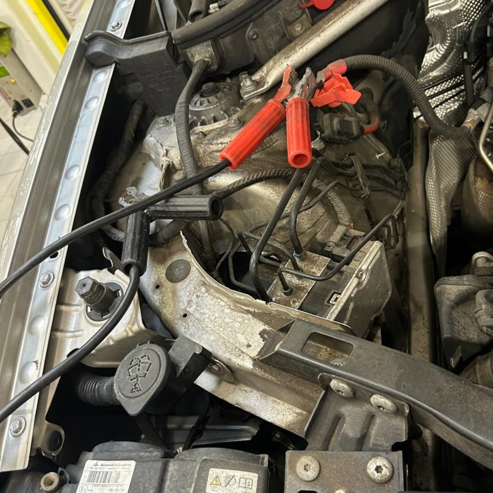

Home / Battery and electrical
How to Jump-Start a Car Safely (Step by Step)
Quick answer
Connect red to the dead battery's positive (+), red to the good battery's positive (+), black to the good battery's negative (−), and the last black clamp to bare, unpainted metal on the dead car, away from the battery. Start the working car, wait a few minutes, then start the dead one. Remove the leads in reverse order, and read your owner's manual first, because some cars have dedicated jump points.

What you need to jump-start a car
- A second car with a healthy 12-volt battery, or a portable jump starter
- A set of jump leads in good condition, with clean clamps and no damaged insulation
- Gloves and eye protection
- Your owner's manual, to find the battery or jump terminals
Thicker jump leads carry current better. Very thin, cheap cables struggle with big engines or a deeply flat battery. If you often get caught out, a portable jump starter means you don't need another car. If your car only clicks, read Car Clicks But Won't Start: Battery or Starter? first, because a jump start only helps when the battery is the problem.
Safety checks before you start
A flat battery can give off hydrogen gas, which is flammable. A few simple checks reduce the risk.
- Don't jump-start a battery that is cracked, leaking, swollen or frozen.
- Switch off the ignition, lights, radio and air conditioning in both cars.
- Park the cars close but not touching, with handbrakes on and gearboxes in Park or neutral.
- Keep clamps, cables and your hands away from fans and belts.
- Don't lean over the battery, and keep sparks and cigarettes well away.
- Hybrids, electric cars and cars with start-stop systems may have special rules. Check the manual.
How to jump-start a car, step by step
- Open both bonnets and find the batteries. Remove any plastic covers. Positive terminals are marked + and often have a red cap.
- Clip one red clamp to the positive (+) terminal of the dead battery.
- Clip the other red clamp to the positive (+) terminal of the good battery.
- Clip one black clamp to the negative (−) terminal of the good battery.
- Clip the last black clamp to a bare, unpainted metal part on the dead car, such as an engine bracket or a marked earth point. Keep it away from the battery, fuel lines and moving parts.
- Start the working car and let it run for two to five minutes.
- Try to start the dead car. If it doesn't fire, wait a minute and try again. Don't crank for more than a few seconds at a time.
Safety note. Never let the red and black clamps touch each other while connected. Never connect the last clamp to the dead battery's negative post, because that's where sparks are most likely near battery gas.
How to disconnect the cables
Once the engine is running, remove the leads in the reverse order: black from the bare metal, black from the good battery, red from the good battery, then red from the formerly dead battery. Don't let the clamps touch each other or any metal while removing them. Close the bonnets and leave the engine running.
What to do after the engine starts
Drive for at least 20 to 30 minutes, ideally without lots of short stops, so the alternator can put some charge back. Don't switch the engine off straight away. If the car dies again or needs another jump within a day or two, the problem is probably the battery, the alternator or something draining it.
- Old battery: most last roughly three to five years.
- Weak alternator: look for the red light described in Battery Light On While Driving.
- Parasitic drain: something stays on after the car is off.
- Loose or corroded terminals: clean and tighten them.
Many parts shops will test a battery and alternator for free.
Why a jump start might not work
| Symptom | Likely reason | What to try |
|---|---|---|
| Nothing at all, no dash lights | Poor connection or fully dead battery | Clean the terminals, reseat the clamps and wait longer |
| Rapid clicking | Battery still too weak | Leave the donor running longer, then try again |
| One loud click | Starter or solenoid fault | A jump may not help. Have the starter checked |
| Cranks but won't fire | Fuel or spark problem, not the battery | See your manual or a mechanic |
| Starts, then dies once leads are off | Alternator not charging | Get the charging system tested |
FAQ
Can I jump-start a car in the rain?
Yes, generally, if you keep connections dry and follow the usual steps. Don't do it if there is standing water around the battery.
Does the order of the jump leads matter?
Yes. Following the correct order, with the last clamp on bare metal, reduces the risk of sparks near the battery.
How long should I leave the cars connected?
Usually two to five minutes with the donor running, then try to start. Longer can help if the battery is very flat.
Can jump-starting damage a car?
It can if the cables are connected wrongly or the clamps touch. Modern electronics are sensitive, so follow your manual carefully.
Can I jump-start a hybrid or electric car?
Some can be jumped at the 12-volt terminals, but rules differ. Check the manual first.
This guide is general information, not professional advice. Check your own vehicle's manual for exact specs and read the disclaimer before starting any job.